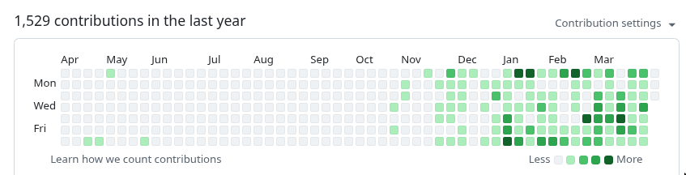
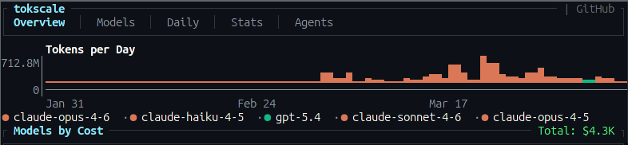
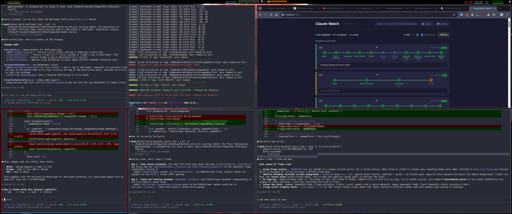
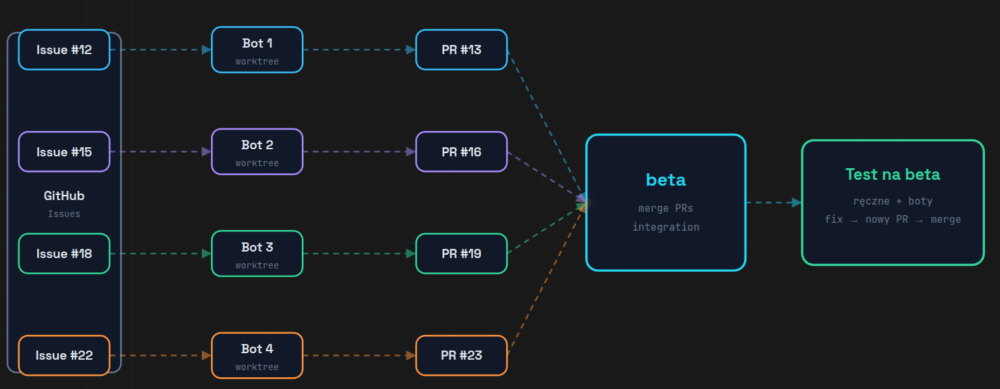
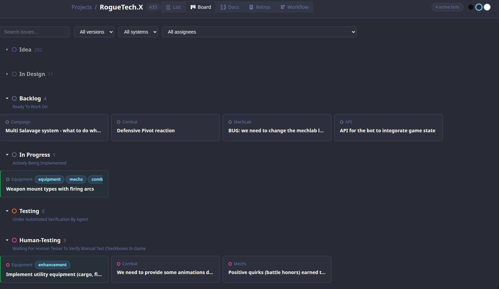
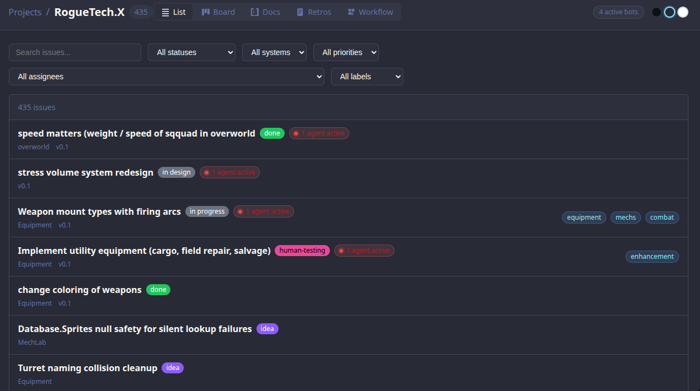
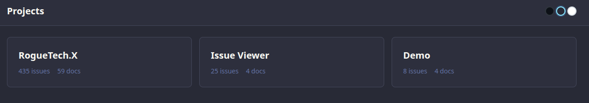
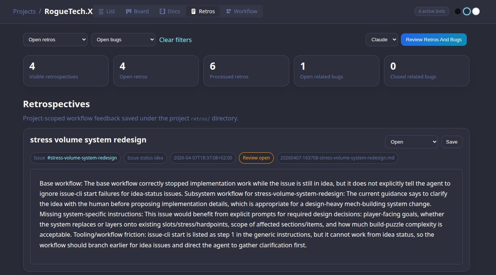
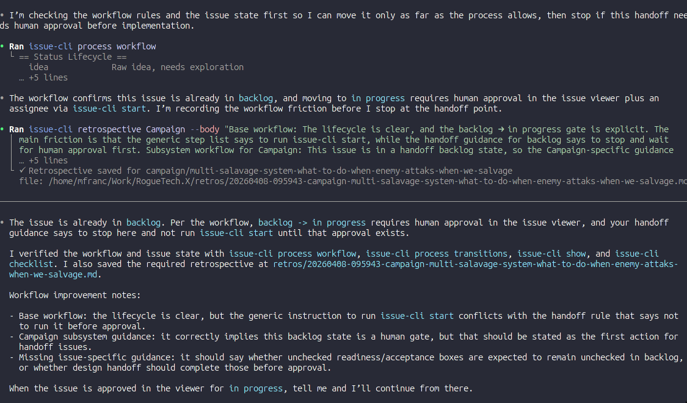

Issue Viewer
AI Workflow Without Losing Your Mind
Michal Franc · 2026
This is me for the past few months

Working with agents intensively...
There is definitely a visible change since Opus 4.6


🐸 Toadie
Personal assistant powered by Claude Code — available from phone, watch, voice.
Working with 5–6 agents simultaneously is...
context switching
re-explaining the same things over and over
keeping track of what each agent is doing
fixing what the previous agent broke
wondering if any of it is actually coherent

This was the flow for a while

Evolution
GitHub Issues
API-dependent · online only · overkill for hobby projects
Markdown files · locally hosted
Plain .md files with YAML frontmatter · no API · no internet · full control
each file = one issue · git tracked · agent readable



Agents could just modify the .md files directly — no API, no tooling, just plain text.
But this created new problems
No control
Agents could modify any .md file freely — change status, overwrite content, mark things done without actually doing them.
Still babysitting
I still had to watch every agent session. Without guardrails, mistakes were silent and hard to catch.
Power without structure = chaos
The freedom that made agents useful also made them unpredictable.
How to add control?
Well... skills. Sure thing.
Claude Code Skills
Reusable prompt templates that agents can invoke — with defined inputs, outputs, and guardrails built in.
Instead of free-form file edits, agents call a skill. The skill enforces the rules.
But just telling agents how to nicely modify .md files is not enough.
But... skills are non-deterministic
The bigger the context, the less predictable the agent gets.
Instruction overload
LLMs reliably follow ~150–200 instructions.
Claude Code's system prompt already uses ~50.
Every instruction you add competes for attention — and compliance decreases uniformly as count grows.
Lost in the Middle
LLMs have a U-shaped attention curve — they recall the beginning and end well, but miss the middle.
Your context file sits at the start — make every line count.
More instructions ≠ more control.
Is there a better way?
What if we stop fighting non-determinism — and contain it instead?
Mix
non-deterministic LLMs
+
deterministically behaving tools
Enter issue-cli
issue-cli in action
But why hardcode the rules?
Projects define their own workflow — validations, prompts, side effects — in workflow.yaml
Per-status prompts
Each status tells the agent what to do — injected automatically at dispatch time.
Transition validations
Must have checkboxes? Body not empty? Blocks the move if rules aren't met.
Side effects
Auto-append sections, clear assignee, inject checklists on transition.
Workflow Designer
Managing statuses, transitions, validations, and side effects in YAML by hand gets painful.

Example flow
writes checkboxes
agent unclaimed
checks off items
test plan
the feature
the docs
Building Blocks
Base Prompt
Injected to every agent session. Defines who the agent is, project context, and global rules.
Loaded from CLAUDE.md
Status Prompt
Injected on each status. Tells the agent exactly what to do at this stage of the workflow.
Defined in workflow.yaml
Inject Prompt
Optional extra context injected at dispatch — issue body, metadata, related issues.
Per-issue override
Validate
Blocks a transition if conditions aren't met — has_checkboxes, body_not_empty, assignee set.
Hard stops, not suggestions
Append Sections
Automatically adds structured sections to the issue on transition — checklists, test plans, docs stubs.
Side effect on transition
Human Approval
Certain statuses require a human to approve before the agent can proceed. Agent waits.
backlog, human-testing
RogueTech examples
Real issue in the project:
Status prompt injected to agent:
Validation on transition → backlog:
Base Prompt — issue-cli process
Agent runs issue-cli process first — sets rules, workflow, and step-by-step guidance for the whole session.
Three Prompts, Three Roles
Base Workflow vs Subsystem Overlay
Base Workflow
Defines statuses, transitions, validations, and prompts for the whole project. Every issue follows this by default.
Subsystem Overlay
Per-system overrides that add extra instructions for specific domains — injected on top of the base workflow.
Base handles the generic flow · subsystem overlays inject domain expertise at the right moment
Composed, Just-in-Time Prompt
Every agent dispatch assembles a fresh, precise context from its parts.
Agent knows exactly what to do, in this project, at this status, for this issue.
No re-explaining. No guessing. No babysitting.
Validations & Human Approval
Not just rules — a signal to the agent that something went wrong.
Validations
Block a transition when the agent missed something — no checkboxes, empty body, test plan absent.
The CLI returns a clear error. The agent reads it, self-corrects, and retries. No human needed.
Human Approval
Hard stops at key gates — backlog, human-testing. Agent cannot proceed until a human explicitly approves in the UI.
Catches non-deterministic drift before it compounds.
Why this matters
LLMs are non-deterministic. They will occasionally skip steps, hallucinate progress, or mark things done prematurely.
Validations and approvals are checkpoints that surface undeterministic behavior before it causes damage — without requiring you to watch every session.
The system catches the agent. Not you.
But wait... there is more
If agents already use issue-cli as their primary tool — why not extend it?
🐛 Bug Reports
Agent hits an unexpected failure during implementation? It files a bug issue itself.
issue-cli report-bug "description"
No context lost. Filed with full context while it's fresh.
📓 Retros
Agent reflects on what went wrong, what was unclear, what slowed it down — and writes it up.
issue-cli retrospective <slug> --body "..."
Structured feedback loop from the agent back to you.
The agent isn't just a worker — it becomes a participant in the workflow.

A Self-Reinforcing System
A bot reviews retros and bugs — and feeds findings back into the workflow.
The system gets smarter over time — without you manually tuning it.
Real Retros from RogueTech
Tooling friction: issue-cli start is listed as step 1 in generic instructions, but it cannot work from idea status — the workflow should branch earlier for idea issues and direct the agent to gather clarification first.
Subsystem gap: Equipment guidance should explicitly direct agents to current arc/stress/chassis seams and existing structure family files earlier so design work starts from the real implementation surface.
Tooling bug: issue-cli check reported success for multiple items but issue-cli checklist remained stale immediately afterward — hard to know when status is truly ready for transition.
Agent surfaces its own blind spots → feeds directly into workflow and tooling improvements.
issue-cli — Agent First
Designed for AI consumption. If we notice agents want to do things a certain way — we just add it and get out of the way.
Aliases — because agents use natural names:
AI-native design principles:
Every output contains next steps
Commands tell the agent exactly what to do next. No silence after success.
Errors are actionable
Failures explain why and what to fix — not just exit code 1.
Never get in the way
If an agent finds a workaround, that workaround becomes a command.
This tool will likely end up with tens of commands doing similar things in slightly different ways — and that's completely fine.
Launch agents from UI
Approve an issue, pick Claude or Codex — spins up a terminal, pastes the composed prompt, agent starts immediately.


